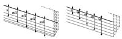

La sintaxis del ciclo fijo de roscado longitudinal G86:
Este ciclo permite tallar roscas exteriores o interiores con paso constante en cuerpos cónicos o cilíndricos.
La estructura básica del bloque es: G86 X Z Q R K I B E D L C J A W
X±5.5 Define la cota según el eje X, del punto inicial de la rosca. Se programará en cotas absolutas y según las unidades activas, radios o diámetros.
Z±5.5 Define la cota según el eje Z, del punto inicial de la rosca. Se programará en cotas absolutas.
Q±5.5 Define la cota según el eje X, del punto final de la rosca. Se programará en cotas absolutas y según las unidades activas, radios o diámetros.
R±5.5 Define la cota según el eje Z, del punto final de la rosca.
K±5.5 Opcional. Se utiliza, junto con el parámetro "W", para el repaso de roscas. Define la cota según el eje Z, del punto en que se efectúa la medición de la rosca. Normalmente es un punto intermedio de la rosca.
I±5.5 Define la profundidad de la rosca y se programará en radios. Tendrá valor positivo en las roscas exteriores y negativo en las interiores. Si se programa con valor 0, el CNC visualizará el error correspondiente.
 B±5.5 Define la profundidad de las pasadas de roscado y se programará en radios.
- Si se programa con valor positivo, la profundidad de cada pasada estará en función del número de pasada correspondiente. De esta forma las profundizaciones, según el eje X, son: B, B, B,.....
- Si se programa con valor negativo, el incremento de la profundización se mantiene constante entre pasadas, con un valor igual al programado (B). De esta forma las profundizaciones, según el eje X, son: B, 2B, 3B, 4B, ..... nB
- Si se programa con valor 0, el CNC visualizará el error correspondiente.
Independientemente del signo asignado a "B", cuando la última pasada de desbaste (antes del acabado) es inferior a la cantidad programada, el ciclo fijo realizará una pasada igual al material sobrante.
E±5.5 Está relacionado con el parámetro B.
Indica el valor mínimo que puede alcanzar el paso de profundización cuando se ha programado el parámetro B con valor positivo. Si no se programa se tomará el valor 0.
D±5.5 Define la distancia de seguridad e indica a que distancia, en el eje X, del punto inicial de la rosca se posiciona la herramienta en el movimiento de acercamiento. Se programará en radios. La vuelta al punto inicial tras cada pasada de roscado se realiza manteniendo esta misma distancia (D) del tramo programado. Si el valor programado es positivo, este movimiento de retroceso se realiza en arista matada (G05) y si el valor es negativo en arista viva (G07). Si no se programa, se tomará el valor 0.
L±5.5 Define la demasía para el acabado y se programará en radios.
- Si se programa con valor positivo, la pasada de acabado se realiza manteniendo el mismo ángulo de entrada "A" que el resto de las pasadas.
- Si se programa con valor 0 se repite la pasada anterior.
- Si se programa con valor negativo, la pasada de acabado se realiza con entrada radial.
C5.5 Define el paso de rosca.
Con signo positivo si se programa el paso según la inclinación del cono.
Con signo negativo si se programa el paso según el eje asociado.
Si se programa con valor 0, el CNC visualizará el error correspondiente.
Las roscas a derechas o a izquierdas se programarán indicando el sentido de giro del cabezal M03 o M04.
Define a que distancia, según el eje Z, del punto final de la rosca (R, Q) comienza la salida de la misma.
- Si se programa con valor positivo, la herramienta se desplaza directamente desde el punto "J" a la distancia seguridad Xs, Zs.
- Si se programa con valor negativo, la herramienta se desplaza desde el punto "J" al punto final de la rosca (R, Q) y posteriormente a la distancia seguridad Xs.
- Si no se programa, se toma el valor 0.

Si se programa A=0, la rosca se realizará con penetración radial.
Si el valor asignado al parámetro "A" es la mitad del ángulo de la herramienta, la penetración se realiza rozando el flanco de la rosca.
Si se programa A con valor negativo, la penetración se realizará en zig-zag,
alternando en cada pasada el flanco de la rosca.
W±5.5 Opcional. Su significado depende del parámetro "K".
Si no se ha definido el parámetro "K", indica la posición angular del cabezal correspondiente al punto inicial de la rosca. Ello permite efectuar roscas de múltiples entradas.
G86 X Z Q R K I B E D L C J A W0
G86 X Z Q R K I B E D L C J A W120
G86 X Z Q R K I B E D L C J A W240


{kind=link}
{kind=link}
{kind=link}
{kind=link}
{kind=link}
{kind=link}
{kind=link}